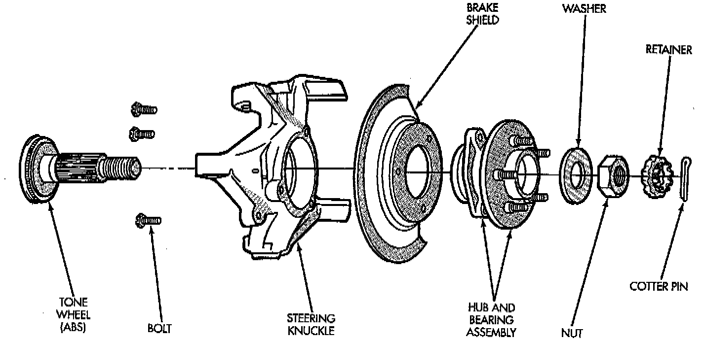
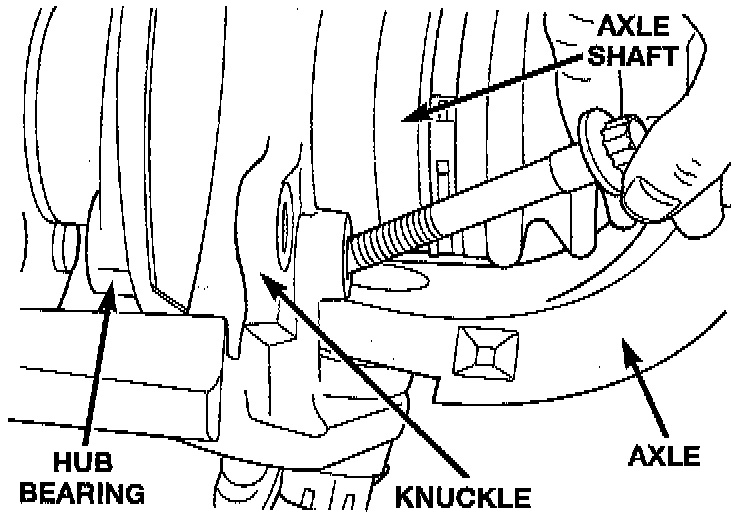
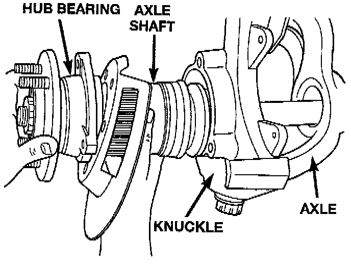

Front
NOTE: If the axle shaft and hub bearing are being removed in order to service another component, the axle shaft and hub bearing can be removed as an assembly.REMOVAL
1. Raise and support the vehicle.
2. Remove the wheel and tire assembly.
3. Remove the brake caliper and rotor.
4. Remove ABS wheel speed sensor, if necessary.

5. Remove the cotter pin, nut retainer, and axle hub nut, if necessary.

6. Remove the hub to knuckle bolts.
7. Remove the hub from the steering knuckle and axle shaft, if necessary.

8. Remove hub bearing and axle shaft assembly, or axle shaft from axle. Avoid damaging the axle shaft oil seals in the axle housing.
9. Remove the brake rotor shield from the hub bearing or knuckle.
INSTALLATION
1. Thoroughly clean the axle shaft and apply a thin film of Mopar Wheel Bearing Grease, or equivalent, to the shaft splines, seal contact surface, and hub bore.
2. Install the brake rotor shield to the knuckle.
3. Install the hub bearing and axle shaft assembly, or axle shaft, into the housing and differential side gears. Avoid damaging the axle shaft oil seals in the axle housing.
4. Install the hub bearing, if necessary.
5. Install the hub to knuckle bolts and tighten to 102 Nm (75 ft. lbs.) torque.
6. Install the hub washer and nut, if necessary. Tighten the hub nut to 237 Nm (175 ft. lbs.) torque. Install the nut retainer and a new cotter pin.
7. Install ABS wheel speed sensor, if necessary.
8. Install the brake rotor and caliper.
9. Install the wheel and tire assembly.
10. Remove support and lower the vehicle.